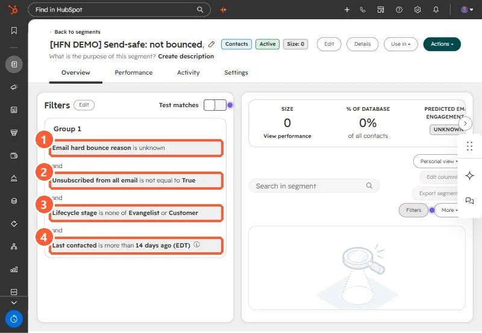

Short answer
Before each one-to-one email batch for an agency, I removed bounced addresses, opted-out contacts, customers, people who had already registered, free email and role inboxes, and anyone contacted in the last 14 days. Most of that fits in one active segment. In my demo it is four filters: Email hard bounce reason is unknown, Unsubscribed from all email is not true, Lifecycle stage is none of Customer or Evangelist, and Last contacted is more than 14 days ago. That last filter leaves out contacts who were never contacted, so add an OR group if you want them.
1. The exclusions that kept coming up
- Hard bounced or known bad addresses.
- Unsubscribed or opted out.
- Customers, who get a different message.
- People who had already registered for the event being promoted.
- Free email domains and role inboxes such as info@, for business-only sends.
- Anyone contacted in the last 14 days.
2. The segment
I built the first four in my demo as an active segment in Segments:


It is labeled as a demo segment in the portal so nobody sends to it.
3. Two gaps to know
- Never contacted: "Last contacted is more than 14 days ago" needs a value, so contacts with no Last contacted date fall out. Add an OR group with Last contacted is unknown if you want them in.
- Registrations and role inboxes: add a form submission or segment membership exclusion for registrants, and an email contains filter for role inboxes.
Related: separate customers from prospect lists and bounced contacts.